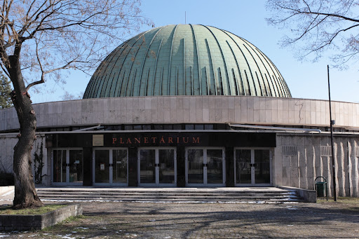
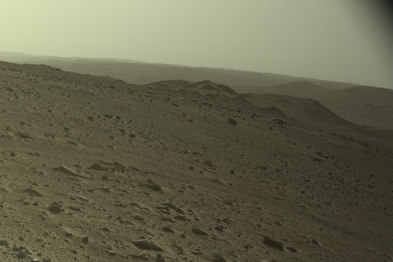
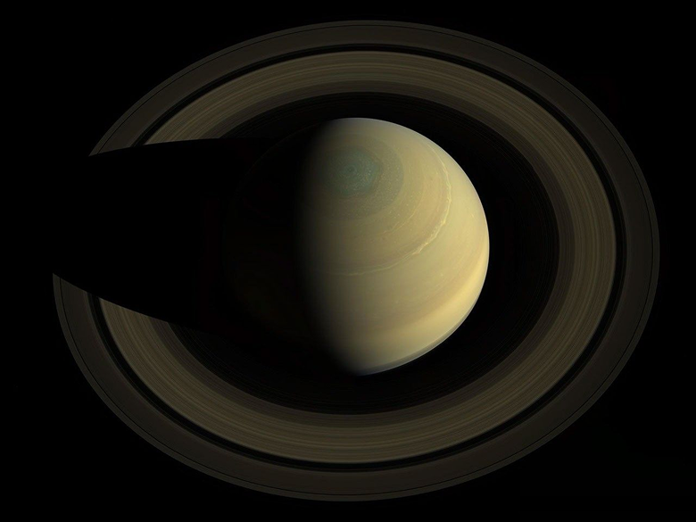
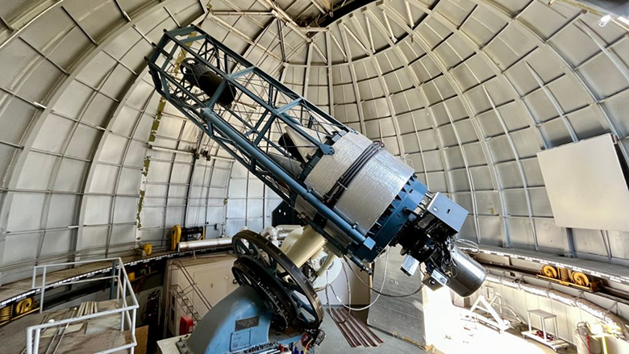
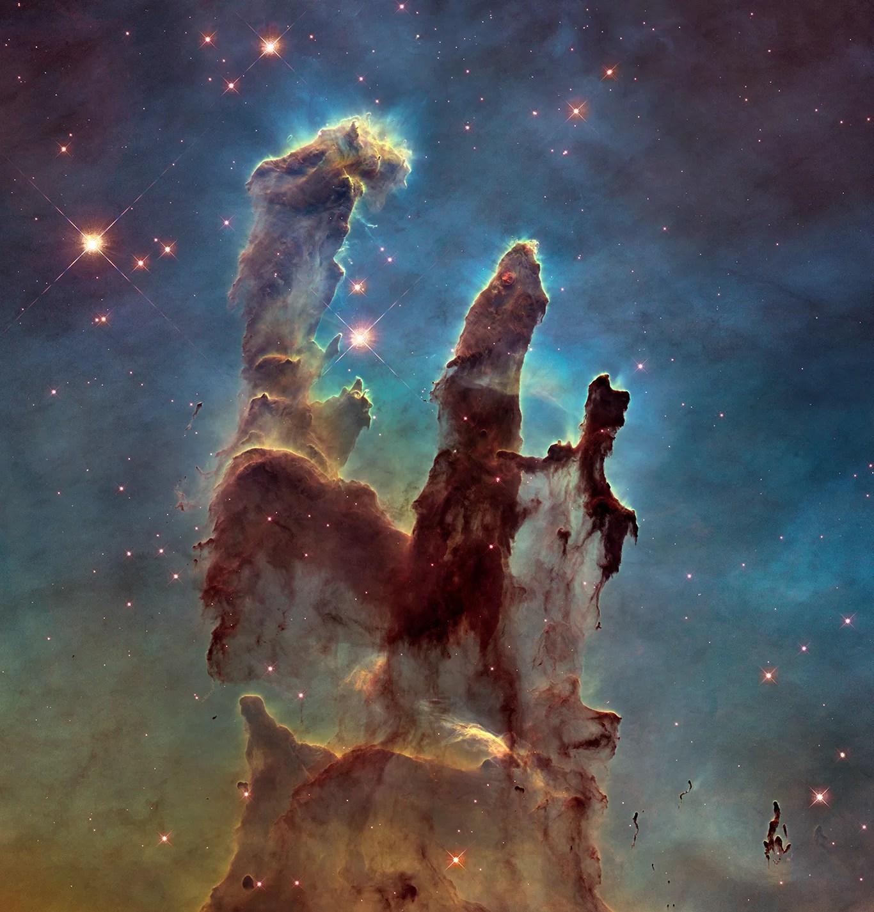

Planetárium
Programok
Jegyek
Galéria
Rólunk
Kapcsolatok
Programok
Jegyek
Galéria
Rólunk
Kapcsolatok
Galéria

A Planetárium főépülete és kupolája

A Mars vörös sivatagi tája

A Szaturnusz és látványos gyűrűrendszere

Nagy teljesítményű obszervatóriumi távcső

Pillars of creation